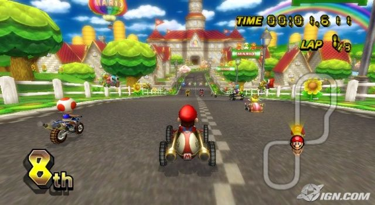

En este juego, Mario y compañía compiten en carreras alocadas, divertidas y concurridas en el Reino Champiñón, esta vez con un gameplay muy similar al del anterior juego, Mario Kart DS lanzado en la consola Nintendo DS. Una novedad en Mario Kart Wii es que, en el juego, también se pueden usar motocicletas, además de los karts. El juego fue presentado durante la conferencia E3 de 2007 para Wii, mostrándose en un tráiler con el que aparecen ciertos personajes típicos de las series, nuevas pistas y otros detalles referentes a series pasadas.  También se mostró que el mando para el juego es principalmente el Wiimote y que en combinación con el accesorio Wii Wheel hacen una experiencia mucho más realista para el jugador. Además, una de las principales características del juego es la incorporación de un modo en línea a través de la conexión Wi-Fi de Nintendo, donde el jugador podrá competir hasta con 12 jugadores al mismo tiempo, sin embargo, la conexión fue descontinuada en 2014. Además se han agregado muchas innovaciones al juego, en comparación con versiones anteriores de la saga de Mario Kart, donde el gameplay era prácticamente el mismo. Ahora, en Mario Kart Wii, se han agregado diversas mejoras, por ejemplo, poder escoger de personaje a un Mii, (que se crea en el Canal Mii de la consola Wii), al igual que acrobacias de los karts o motocicletas que pueden realizarse en pleno juego.